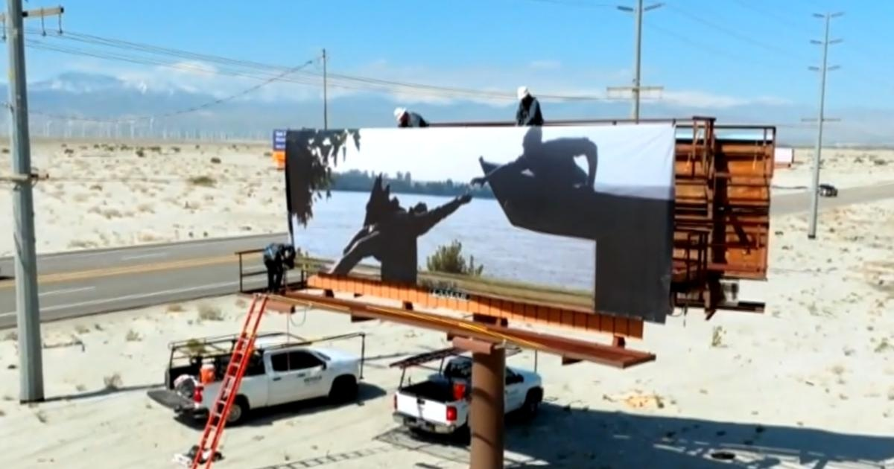

Art installation in Palm Springs honors the life of Tyre NicholsPalm Springs, California — In the blazing desert heat, an alluring snapshot towers above what seems to be an endless highway. "It's such a simple, beautiful photograph, the actual surface of the road disappearing into the landscape," Desert X artistic director Neville Wakefield told CBS News of the photograph snapped by , which is one of several on highway billboards, part of the biennial Desert X exhibition in Palm Springs, California. Nichols, a California native, died in January, three days after being violently beaten by police in Memphis, Tennessee, during a traffic stop. The 29-year-old's death sparked nationwide outrage and led to the on second-degree murder charges. An autopsy report released Thursday a homicide caused by blunt force injuries. An avid photographer, Nichols is the first ever artist whose work has been showcased posthumously in Desert X. "I was struck by this incredibly sort of reflective, calm, beautiful aspect of his life, that really we haven't been so familiar with," Wakefield said. Nichols' work serves as a legacy, bridging tragedy to transformation. "Hopefully, the contrast by the placement of these images by this busy road, where these kinds of stops take place, and the beauty of them levitated above, makes people consider these things and what they can do about them," Wakefield said. Wakefield wants people to know not just how Nichols died, but how he lived. "We all hope for change," Wakefield said. "I mean, that's part of what art can do, is change the hearts and minds of people." for more features. |
 |